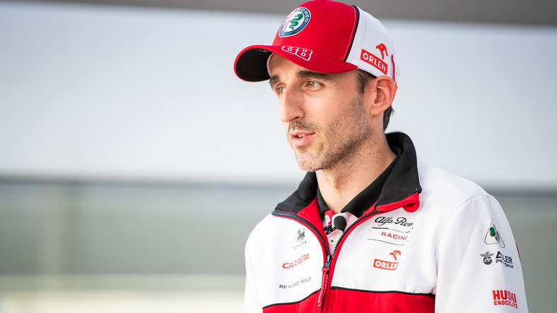

Strona o F1
Robert Kubica
Na tej stronie znajdziesz wszystkie najważniejsze rzeczy dotyczące Formuly jeden, zaczynająć od kierowców po wyniki wyścigów i kalendarz.
Robert Kubica
| Tor | Czas | Samochód | Sezon |
|---|---|---|---|
| Bahrain | 1:33.096 | BMW Sauber | 2008 |
Mistrz Formuły Renault 3.5 z 2005. W latach 2006–2009 był kierowcą zespołu BMW Sauber, rozpoczynając
swoją karierę w Formule 1 od roli kierowcy testowego. W czerwcu 2008, podczas Grand Prix Kanady, odniósł
swoje pierwsze zwycięstwo w Formule 1, stając się pierwszym Polakiem w historii, który tego dokonał. W
tamtym sezonie przez jeden etap prowadził w klasyfikacji generalnej a ostatecznie zakończył go na 4.
miejscu, co jest jego najlepszym wynikiem w karierze. W 2010 dołączył do zespołu Renault. Jego
obiecująco zapowiadającą się karierę przerwał poważny wypadek podczas rajdu Ronde di Andora w 2011, w
którym omal nie stracił prawej ręki. W latach 2013–2016 startował w Rajdowych Mistrzostwach Świata, a w
debiutanckim sezonie, za kierownicą Citroena DS3 RRC, wraz z pilotem Maciejem Baranem, został mistrzem
świata klasy WRC 2. W 2018 powrócił do padoku Formuły 1 i został kierowcą rezerwowym i rozwojowym
zespołu Williams. W sezonie 2019, po ośmiu latach przerwy wrócił na fotel wyścigowy jako kierowca
brytyjskiego zespołu. Od 2020 jest kierowcą rezerwowym i rozwojowym zespołu Alfa Romeo Racing. W 2020
w barwach Orlen Team ART startował w serii Deutsche Tourenwagen Masters. - Wikipedia
